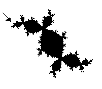
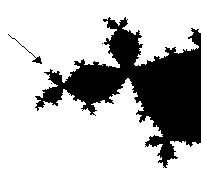
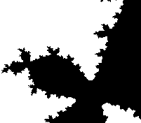

Una nuova geometria intesa a interpretare, descrivere e riprodurre una particolare proprietà delle figure naturali è la geometria frattale, incominciatasi a diffondere nella seconda metà del ventesimo secolo, soprattutto ad opera di Benoit Mandelbrot. Una figura frattale ha la caratteristica di avere un'invarianza rispetto al cambiamento di scala, detta autosomoglianza. Ad esempio, in figura, vengono via via ingranditi frammenti del contorno dell'insieme di Mandelbrot, costruito mediante un computer seguendo una certa legge matematica.
  
JULIA
Gli ingrandimenti evidenziano un'invarianza di forma rispetto al cambiamento di scala che portano a forme sempre più frastagliate.
Alle figure frattali non viene attribuita una dimensione intera, bensì una dimensione espressa da numeri decimali. Se una figura frattale
viene suddivisa in un certo numero N di parti uguali, per riportare ciascuna parte alla grandezza originale occorre un ingrandimento di fattore M;
si definisce così dimensione di questa figura il valore del rapporto:
Gli elementi che costituiscono le figure frattali non possono essere disegnati direttamente, ma solo definiti mediante un algoritmo costruttivo, da ripetersi all'infinito. Oltre all'insieme di Mandelbrot ( chiamato anche Julia ) esistono altri esempi di figure frattali, come il fiocco di neve di Kock , ottenuto dividendo ciascun lato di un triangolo equilatero in tre parti uguali e costruendo su ognuna delle parti centrali un triangolo equilatero. Ripetendo quest'ultimo procedimento all'infinito si ottiene un immagine assomigliante ad un fiocco di neve.
Insieme di Mandelbrot
L'insieme di Mandelbrot si ricava dall'espressione:
dove Z0=0 e c è un numero complesso arbitrario. Si suppone di determinare i suoi termini per ogni valore di c, cioè per ogni punto del piano di Gauss, dove i numeri complessi vengono rappresentati graficamente. Si scopre che per alcuni valori di c la dimensione, che è la distanza del suo punto immagine dall'origine, dei termini della successione aumenta molto rapidamente dopo un certo numero di iterazioni, mentre per altri tale dimensione continua a compiere solo piccole oscillazioni. L'insieme di questi ultimi valori è detto insieme di Mandelbrot. E' dimostrato che se dopo un certo numero di iterazioni, la dimensione dei termini dati dall'espressione è maggiore o uguale a 2, detta dimensione aumenterà sempre più rapidamente. Si può così realizzare un semplice algoritmo per individuare se un numero complesso c fa parte o meno dell'insieme di Mandelbrot. Basta, infatti, realizzare un programma che compia un numero indice N di iterazioni, controlli se la dimensione dell'espressione supera il valore 2 prima dell'N-esima iterazione, quindi c non fa parte dell'insieme di Mandelbrot, o in caso contrario che c vi appartiene, e che rappresenti graficamente l'insieme dei valori trovati, colorando di nero i punti appartenenti all'insieme e lasciando bianchi i punti non appartenenti all'insieme. Sullo schermo apparirà così un tozzo otto rovesciato, di contorno irregolare che rappresenta l'insieme di Mandelbrot.
Esempio di programma:
10 INPUT "Parte Reale: ", CX 20 INPUT "Parte Complessa: ", CY 30 SCREEN 1 40 FOR A = 0 TO 100 50 FOR B = 0 TO 100 60 X0 = -2 + A / 25 70 Y0 = 2 - B / 25 80 I = 1 90 WHILE I < 20 100 X1 = X0 * X0 - Y0 * Y0 + CX 110 Y1 = 2 * X0 * Y0 + CY 120 IF X1 * X1 + Y1 * Y1 > 2 THEN GOTO 180 130 X0 = X1 140 Y0 = Y1 150 I = I + 1 160 WEND 170 GOTO 190 180 PSET (A, B), 5 190 NEXT B 200 NEXT A
Il risultato finale sarà: